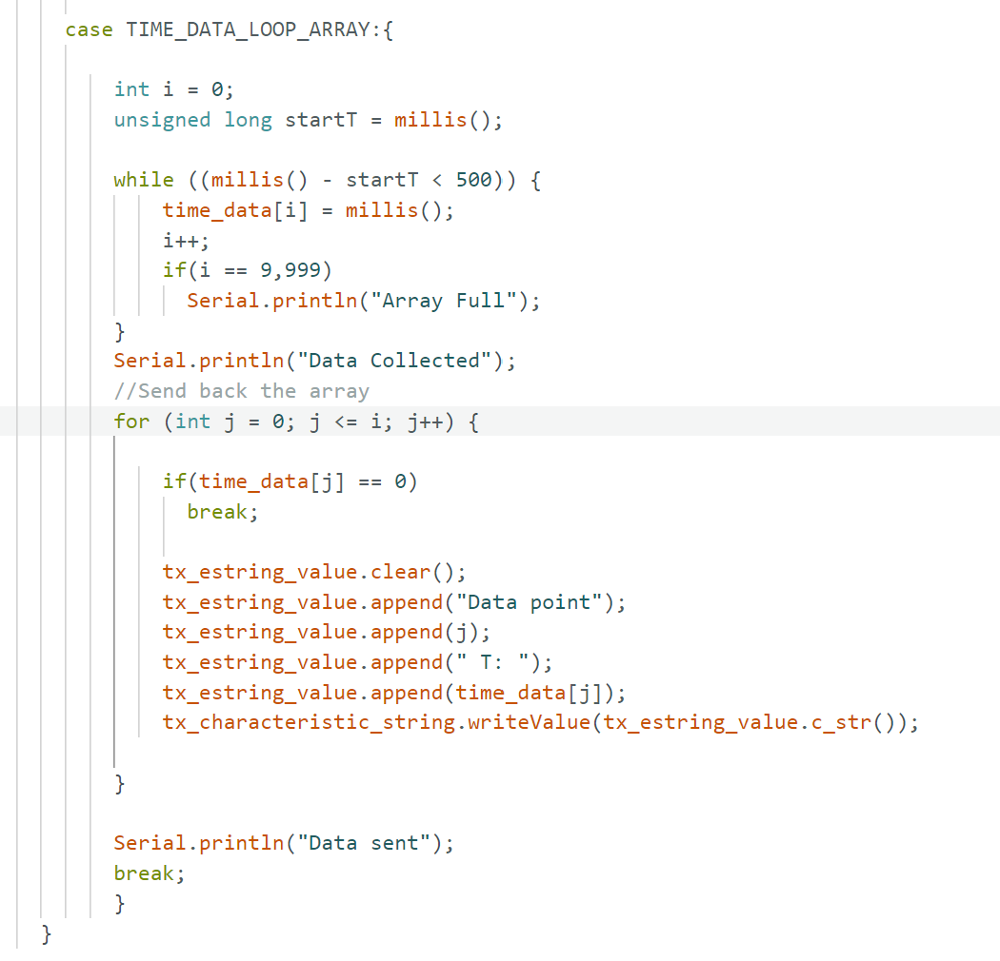

Lab 1B: Bluetooth Communication with Artemis
Objective
The goal of Lab 1B was to establish Bluetooth communication between my computer and the Artemis board. I used Python in Jupyter notebooks to send commands to the Artemis board, which was running Arduino code. I also set up communication from the Artemis back to my computer and the Python script. This communication was made easier through the use of notifiers. The ability of the Artemis to send data back to the computer via Bluetooth will be useful in future projects.
Prelab: Setup and Codebase
Computer Setup
To begin the lab, I ensured that I had the latest version of Python installed (Python 3.10 or later) and verified that pip was also up-to-date. The first task was to install the required packages and set up a virtual environment to isolate my lab dependencies from the rest of the system.
Create and Activate the Virtual Environment
I installed and created a virtual environment for Fast Robots and placed it in its own directory. After activating the environment, I installed the necessary Python packages for the lab
Virtual Environment Setup through Command Prompt:
Codebase
Once the environment was set up, I downloaded and unzipped the codebase into my project directory. This included several important
files for both the Artemis board (ble_arduino.ino) and the Python side of things (ble.py, base_ble.py, etc.).
To use Bluetooth Low Energy (BLE) communication, I read through the provided demo.ipynb notebook to familiarize myself with
how the code is structured and the functions I would use.
Artemis Board Setup
On the Artemis side, I first installed the ArduinoBLE library through the Arduino IDE’s library manager. Then, I loaded the
ble_arduino.ino sketch onto the Artemis board. It was important to set the baud rate to 9600 bps, which would allow for the
communication between the computer and the Artemis board without crashing my computer.
The Artemis board printed its MAC address, which I later used to update the connections.yaml file on the computer
side to ensure the correct pairing. I also generated a UUid using the python script and made sure it was matching in the Arduino_Ble code.
Artemis connected through bluetooth:
Matching UUid of Notebook & Artemis:
Lab Tasks
1. Sending a String Value to the Artemis Board
The first task involved sending a string from my computer to the Artemis board using the ECHO command. I sent the string “hi” to the Artemis, and the board responded by sending the augmented string “Artemis says hi” back to the Jupyter notebook.
Echo Code Output:
Echo Code:
2. Sending Three Floats to the Artemis Board
For the next step, I used the SEND_THREE_FLOATS command to send three float values from the computer to the Artemis board. These values were then displayed on the serial monitor of the Arduino sketch running on the Artemis board. This demonstrated the Artemis's ability to handle multiple float values simultaneously. I sent 2.25, 6.10, and 3.07; all of which the board returned.
Send 3 Floats Arduino Code & Output:
Send 3 Floats Command:
3. Adding GET_TIME_MILLIS Command
I then added a new command, GET_TIME_MILLIS, to the Artemis board. The Jupyter notebook requested the time from the Artemis, and the Artemis sent back the time it had been running for in the format T: milliseconds and displayed Sent time on the serial monitor.
Arduino Code & Output:
Get Time Command:
4. Setting Up Notification Handler in Python
I set up a notification handler in Python to receive the time string from the Artemis board. The handler processed the string (e.g., T:123456) and extracted the time value from it. This step allowed for less code needed to obtain a value. In task 3, it takes four lines to extract a value, while in task 4, it only takes two once the notifier is set up.
Notifier Code:

Using the Notifier:
5. Measuring Data Transfer Rate
Next, I wrote a loop that continuously requested the current time from the Artemis board in milliseconds. The timestamps were sent from the Artemis to my computer and processed by the notification handler. I collected these timestamps for a few seconds and calculated how fast the messages were being sent by having the Arduino code label the number of each data value sent. This helped me determine the effective data transfer rate of the system when calling for data from Artemis to Jupyter notebook. 134 data points were sent in 7.2 seconds, for a rate of a data point every 0.0186 milliseconds.
Arduino Code:
Calling in Jupyter Notebook:
Data Output:
6. Storing Time Stamps in an Array
Next, instead of sending each timestamp individually, I stored them in an array. I made the size of the array to be 5,000 and had the code alert me when the array filled. This shows how over 5,000 data points were obtained using this method vs the prior 134. I also created a SEND_TIME_DATA command that loops through the array and sends each data point back to the computer for processing. This allowed me to gather and then send all of the data to Jupyter notebook.
Arduino Code:
Array Full:
7. Adding Temperature Readings to the Array
I then added a second array to store temperature readings, ensuring that each temperature reading corresponded to the timestamp at which it was recorded. The GET_TEMP_READINGS command was used to loop through both arrays (time and temperature), sending the data concurrently to the computer. The notification handler processed the data, displaying the time and temperature values in side-by-sie lists.
Arduino Code:
New Notifier:
Calling command in Python:
8. Discussion of Methods
In the first method, data is transmitted immediately as it is received, providing real-time communication, whereas the second method collects the data over a specific time period before quickly sending it all at once. The second method allows for faster data transfer. Upon reviewing the output from the second method, it was evident that several timestamps had identical values, suggesting that multiple data points were sent by the Artemis within a single millisecond. The primary advantage of the first method is its ability to provide live data, but it is slower because it relies on waiting for new sensor data. On the other hand, the second method enables much faster transmission but sacrifices real-time communication. This can be an issue if the robot moves quickly, as the data sent may reflect the robot’s previous location rather than its current one. Furthermore, since data is stored on the Artemis, there’s a risk of exceeding the storage capacity. The first method is ideal for scenarios requiring live updates or troubleshooting, while the second method is more suited for recording data during a specific event or experiment for later review. The Artemis board has a storage capacity of 384KB (384,000 bytes). Since each time and temperature value is stored as a 4-byte float, the board can store up to 96,000 time values at most.
Back to Main Page